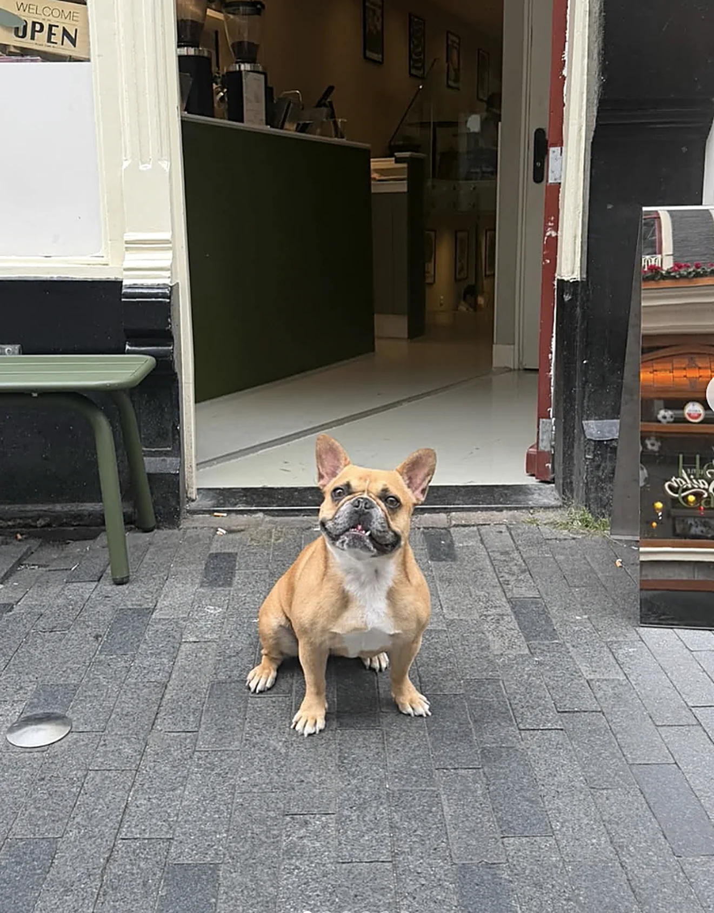
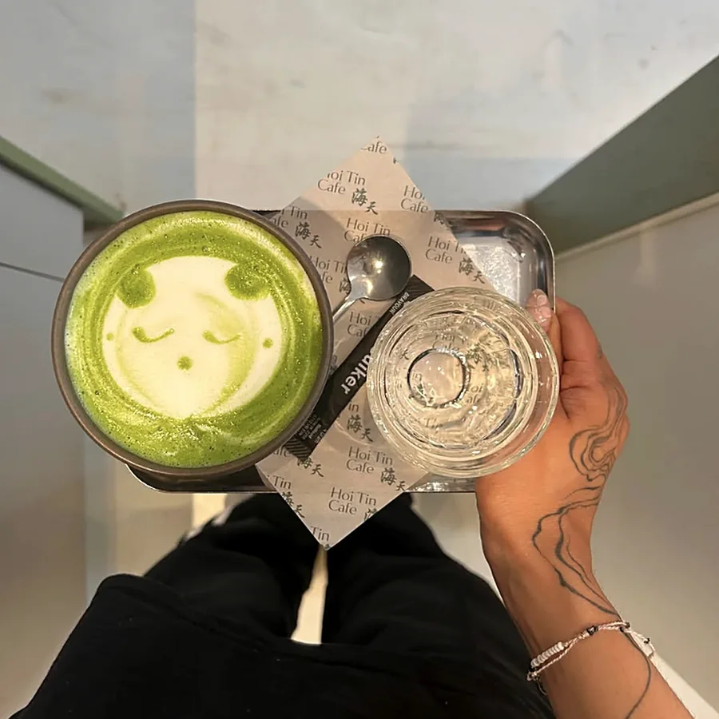
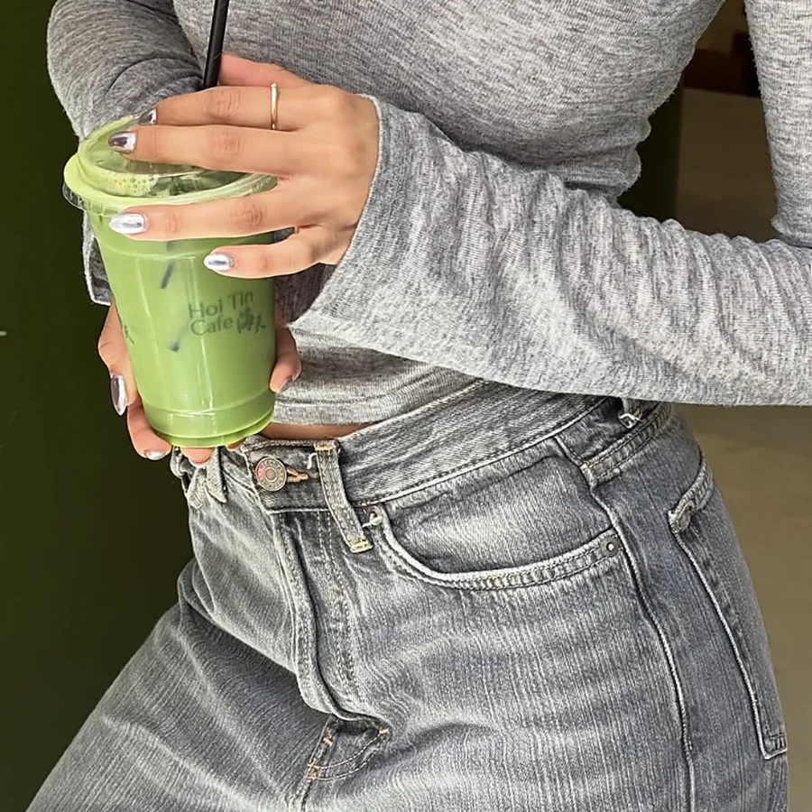
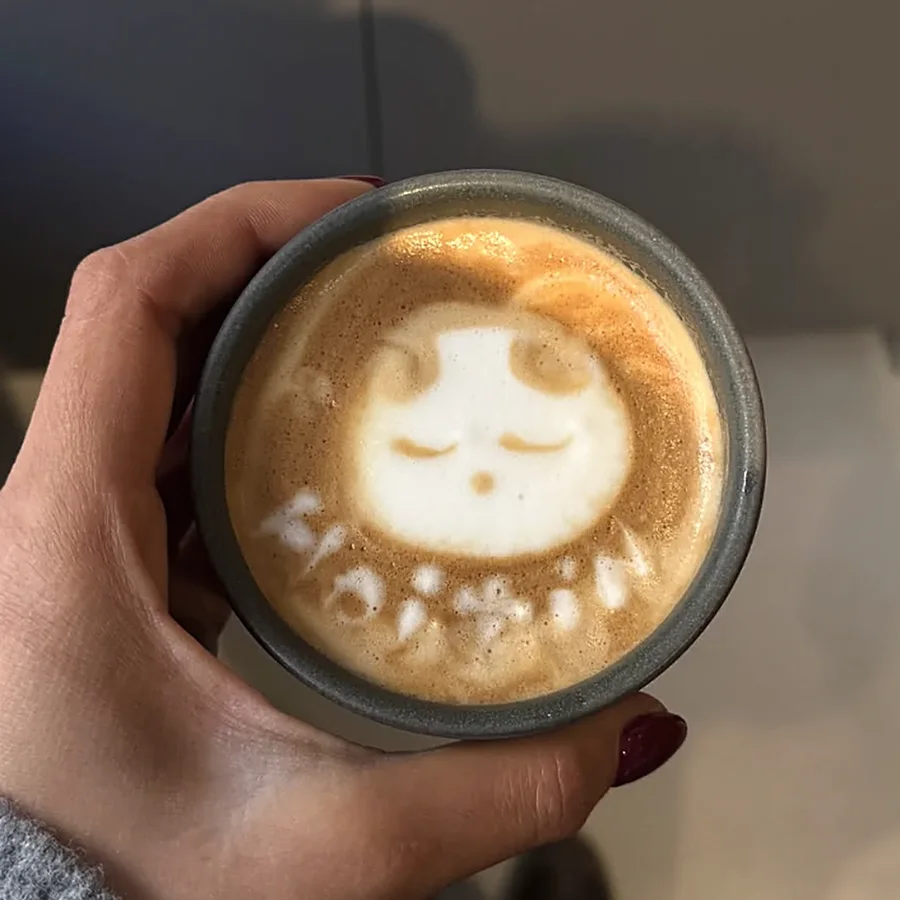
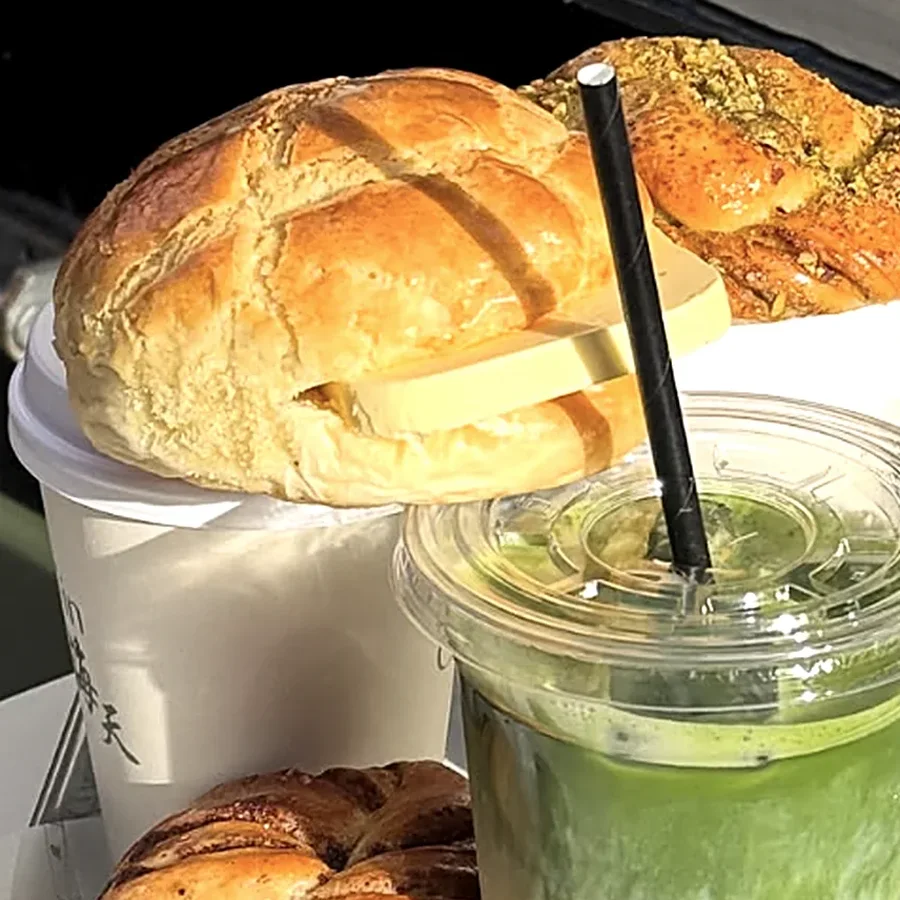
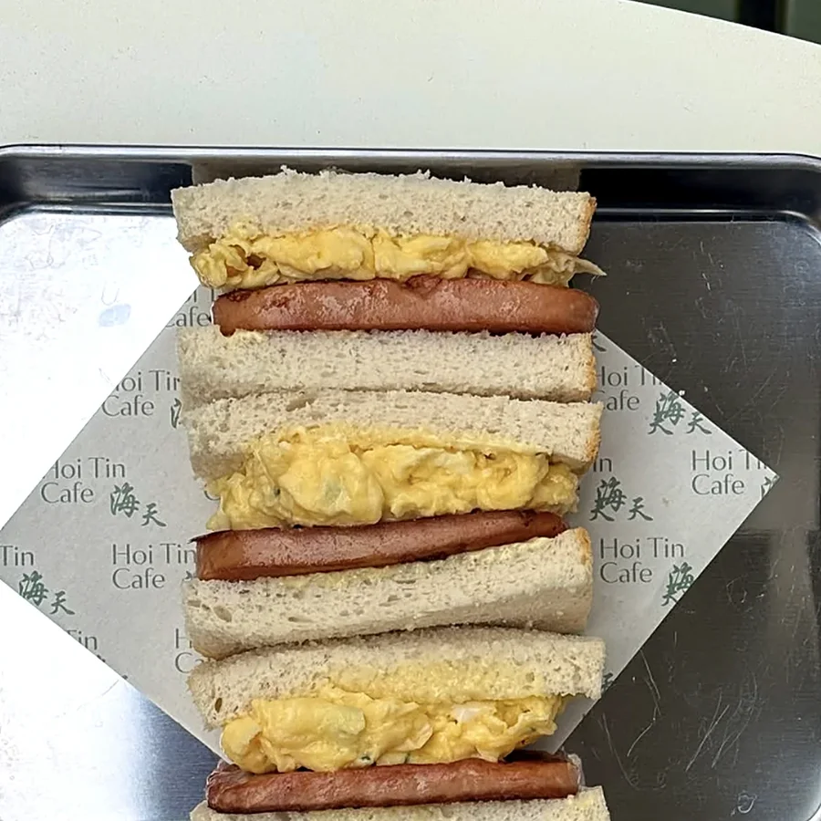
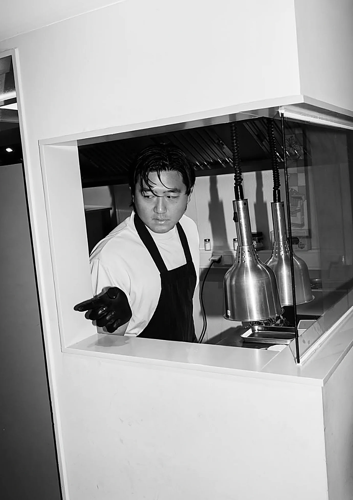

Poured with a smile
Come by our café at Zeedijk 119, Amsterdam. Japanese matcha, specialty coffee and Hong Kong milk tea, with buns from the family bakery.
Silky, green, drawn by hand, every single cup.
Every Cup Gets a Face
No two lattes look the same. Our baristas draw a little character on every hot drink, so don't be surprised if yours winks back.
Loved by Our Neighbourhood
based on 213 reviews

Come Say Hoi
Zeedijk 119, Amsterdam. Look for the green bar
and, if you're lucky, a very good boy at the door.
Find Your Favourite

Bestseller
抹茶Only here

奶茶


奶黃包
Never Order a Drink Alone
Our favourite combinations from the bar and the bakery. Ask for one at the counter.
Matcha Latte + Bolo Bao
Creamy matcha, crackly sweet top, cold butter melting in. The Zeedijk breakfast.
奶茶
Milk Tea + Egg Sandwich
Strong Hong Kong milk tea with egg and luncheon meat on soft white bread. A classic for a reason.
Iced Matcha + Custard Bun
Double down on matcha. Add an extra shot to the latte, it's worth it.
From Powder to Portrait
Japanese matcha goes through a fine sieve, so there's not a single lump.
Whisked with hot water until it's smooth and frothy on top.
Steamed milk goes in, slowly, until the cup is almost full.
The finishing touch: a little face, drawn by hand in the foam.

A New Café From the Hoi Tin Family
Ethan, son of the Hoi Tin family, and Fiene opened this café right across from the family's restaurant on the Zeedijk. Think Hong Kong teahouse, made new.
- Japanese matcha and specialty coffee
- Hong Kong buns and monthly bakery specials
- Drinks you won't find anywhere else in Amsterdam
At the Green Bar
Grab a stool, watch your latte get its face, and chat with the baristas.
Best for · catching upThe Quiet Floor
Low stools, soft light and a bit of calm. Bring a book or your laptop.
Best for · studyingFrequently Asked Questions
Everything you want to know before you drop by